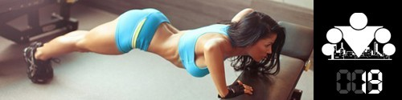
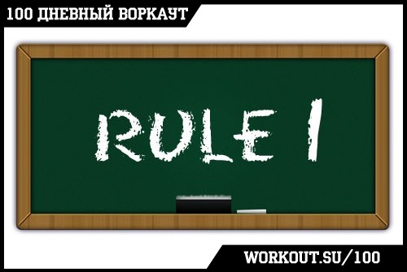
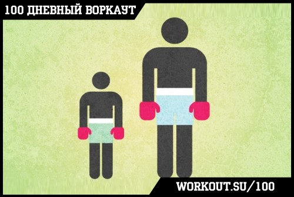
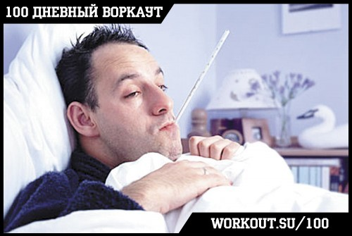
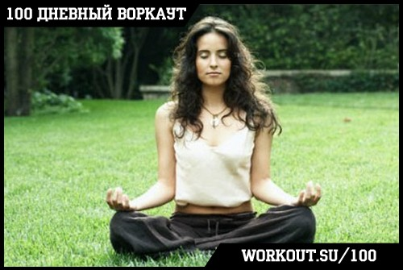

100 Дневный воркаут
<==== Вернуться к оглавлению
День 19. Травмы, болезни и тренировки

Сегодня мы поговорим о теме, с которой так или иначе сталкиваются все, кто занимается воркаутом, фитнесом или спортом. Потому что просто невозможно тренироваться сколько-нибудь долго и не столкнуться с ней. Итак, сегодня мы поговорим о травмах и болезнях.
Травмы
Начну с самого главного - травмы получают абсолютно все! Это неизменный спутник силовых (да и вообще) тренировок. И совершенно неважно, как давно вы тренируетесь, какого уровня смогли достигнуть, и насколько внимательно и ответственно подходите к тренировкам (хотя это и снижает риск получения травмы), всё равно у вас есть вероятность получить травму. Просто смиритесь с этим.
Самое главное правило

ЗАПОМНИТЕ!:
Мы никогда не делаем что-то, что вызывает боль.
НИКОГДА
. Не нужно терпеть боль, не нужно что-то делать через боль. Если вдруг что-то начинает болеть, значит СРАЗУ прекращаем делать.
Есть довольно много причин, почему не стоит тренироваться через боль, но лично для меня самой весомой была следующая. Ваш организм не любит когда у него что-то болит, поэтому если вы будете заставлять его делать упражнения, вызывающие боль, он будет стараться делать их так, чтобы этой боли было меньше. То есть боль будет напрямую влиять на вашу технику выполнения упражнений, поскольку организм будет стараться изменить её. Знаете к чему приводят подсознательные изменения организмом техники исполнения? К повышению вероятности получения дополнительных травм!
Не хотите серьёзных проблем - не делайте ничего через боль! Замечу, что я говорю о плохой боли (когда болят связки/суставы или ещё что-нибудь, что болеть не должно), а не о хорошей боли (когда болят мышцы). Хотя во втором случае тоже нужно учиться слушать свой организм и понимать, когда можно тренироваться, а когда нет.
Ну а после того, как вы перестали делать то, что вызывает боль, вам следует заняться анализом и найти источник этой боли, понять, почему она возникла и что с ней делать дальше. Всё очень просто.
Травмы большие и маленькие

Травмы бывают разные и главное, что нужно сделать - это понять, насколько серьёзную травму вы получили. Если проблема не очень серьёзная (например растяжение), то восстановление может занять несколько дней или неделю, если посерьёзнее (вывих), то тут уже речь о неделе-другой, ну и чем серьёзнее, тем больше потребуется времени, чтобы вернуться в норму.
В любом случае есть ещё несколько правил, которые позволят восстановиться после травмы быстрее:
*
Дайте отдых и покой.
Без необходимости не нагружайте ту часть тела, которая получила травму. Чем больше покоя, тем лучше.
*
Используйте обезболивающие гели.
В воркауте травмы вообще довольно редки, но если говорить о самых частых, то это безусловно разные растяжение и воспаления. Обезболивающие гели содержат активный элемент, который позволит снять воспаление. Это не только может устранить боль, но иногда и причину боли. В общем, полезная штука, используйте.
*
Используйте фиксаторы.
Есть такие штуки, фиксаторы. Они есть на запястья, на локти, на плечи, на колени и т.д. Их суть в том, что они дают дополнительную фиксацию суставу, ограничивая его подвижность и снижая нагрузку на него и на мышцы/связки вокруг. Могут быть полезны, если уже совсем хочется/надо тренироваться.
Болезни
Все мы время от времени болеем, и что нам с этим делать, когда так хочется пойти и потренироваться, чтобы поскорее достигнуть желаемого результата.

Любая болезнь - это стресс для вашего организма. В этот момент он мобилизует все свои внутренние ресурсы на то, чтобы противостоять возникшей угрозе и разрешить ситуацию с минимальными потерями. Я думаю это очевидно.
А вот что многим почему-то не очевидно, так это тот факт, что во время болезни
КАТЕГОРИЧЕСКИ НЕЛЬЗЯ
тренироваться! Ваш организм уже находится под нагрузкой и тратит энергию на восстановление. Когда вы болеете и идёте на тренировку, вы фактически говорите своему организму "эй, чувак, кажется ты не очень загружен, держи вот ещё порцию". Вы создаёте дополнительный стресс, с которым может и справитесь, а может только усугубите ситуацию. Но другой вопрос - зачем вы это делаете? Ради результатов? Не будет никаких результатов, если вы этой тренировкой ухудшите своё состояние и на выздоровление уйдет не пара недель, а месяц. Или вы думаете, что за месяц результаты упадут меньше, чем за пару недель?
Я знаю ещё как минимум 2 проблемы, которые двигают людей на тренировки во время болезни.
Первая - зависимость от тренировок.
Не буду сейчас рассказывать про эндорфины и допамины, но если вы втягиваетесь в тренировки, особенно если вы занимаетесь не так долго, то каждая тренировка для вас это настоящий кайф, и появляется даже своего рода зависимость. Так вот, вы ходите на тренировки не ради кайфа и не ради самих тренировок, вы ходите туда, чтобы получать результаты! Я не думаю, что ваша цель заключается в том, чтобы потренироваться 100 раз за 100 дней, верно? Ваша цель заключается в том, чтобы стать более сильными, более здоровыми, более красивыми. Если вы тренируетесь во время болезни, вы двигаетесь в противоположную от этих целей сторону! Подумайте над этим.
Вторая - эго, которое говорит "ну я же дал себе слово тренироваться, значит я должен тренироваться несмотря ни на что".
Знакомо звучит, да? Но вы опять начинаете подменять понятия, если вы идёте на тренировку только потому, что вы дали себе слово, значит вы идёте тренироваться чтобы потешить своё эго, а не для того, чтобы получить результаты. Почему? Потому что результаты не приходят во время болезни и нет смысла тренироваться при плохом самочувствии!
Так что если вы болеете, то вы болеете. Никаких тренировок, не нужно давать лишнего стресса своему организму, наоборот, сделайте всё, чтобы ему было проще выздоравливать и восстанавливаться! Кстати, после выздоровления я бы рекомендовал отдохнуть около недели и постепенно возвращаться к прежним уровням. Кстати, завтра будет подробный инфо-пост на тему возвращения к активным тренировкам после перерыва ;)
Правильное отношение

Никто не любит получать травмы, но если они неизбежны, то в конечном итоге всё зависит только от нашего отношения к ним. Я тоже знаю, что подобные ситуации могут выбивать из колеи, что совсем не хочется сходить с намеченного пути и делать перерыв.
Во-первых, в зависимости от травмы можно модифицировать тренировки таким образом, чтобы вы могли тренироваться дальше не задействуя травмированные части тела. Например, вы потянули запястье, окей, значит вы можете посвятить ближайшие тренировки нижней половине тела. Подскользнулись (с учётом того, как у нас убирают тротуары это немудрено), упали, ударились коленом, окей, в ближайшее время тренируйте верх тела. Этот список можно продолжать очень долго, потому что варианты ограничены только вашей фантазией. Но основная идея одна - дайте время восстановиться тому, что повреждено.
Во-вторых, тренировки и воркаут - это всего лишь часть нашей жизни, да, важная и клёвая, но только часть. В мире есть ещё бесконечная масса интересных вещей, которыми вы можете заняться, пока не можете тренироваться. Время восстановления можно использовать с пользой для того, чтобы заняться тем, на что не хватает времени из-за загруженности дня (потому что когда болеешь свободного времени, обычно, достаточно много). Можете освоить какую-нибудь полезную компьютерную программу, прочитать интересную книгу, научиться играть на музыкальном инструменте, придумать что-нибудь, порефлексировать над прошлым и составить планы на будущее! Вариантов всегда много, нужно только перестать думать над тем, что сейчас нельзя тренироваться и начать думать над тем, чем сейчас можно заняться!
======> День 20. Как вернуться к тренировкам после перерыва